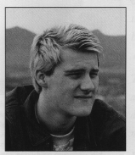
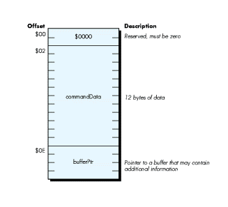
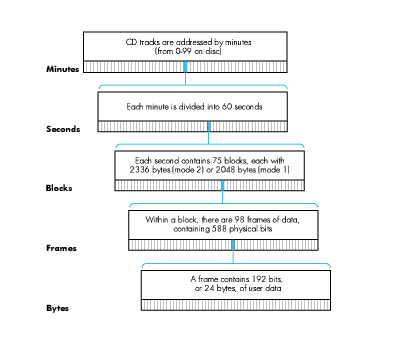

CD-ROM opens up the possibility of providing the user of your application with a new
dimension of sound feedback, in full digitally reproduced stereo. Coaxing the sound out
of the AppleCD S C® drive, however, is not as simple as prompting the user to "press
PLAY on your CD-ROM drive now." This article explains the intricacies of controlling
the audio functions of the AppleCD SC from an Apple II application.
Imagine how you might use CD-ROM audio tracks to make your software burst with
sound: language software that pronounces each lesson as it teaches it; reading programs
that speak words instead of just displaying them; almost any kind of program adapted
with audio cues for an audience with reading disabilities. CD-ROM is also the answer
for applications that require lengthy music tracks or background music that simply
won't fit on the program disk in a digitized format.
In this article, you'll learn about the capabilities of the AppleCD SC drive, and the
kinds of calls you can make to the drive to control the audio features. The article also
covers basic information about how audio tracks are stored on CD-ROM. (While the
primary focus of this article is the Apple II, this section applies to the Macintosh as
well.) Finally, it covers the specifics of playing audio tracks via the GS/OS® SCSI CD
driver and the five major audio control calls.
You make the AppleCD SC do your bidding by sending it the GS/OS device calls DStatus
andDControl via the GS/OS SCSI CD driver. These calls enable you to control all
features of the drive.
You get information about the contents of the disc in the drive and the current status of
the drive with two DStatus subcalls: ReadTOC and AudioStatus.
You control audio play with five DControl subcalls: AudioPlay, AudioPause,
AudioScan,AudioStop, and AudioSearch. These calls start and stop the disc from
spinning inside the AppleCD SC, and position the laser.
We'll look at each of these functions in greater detail in the sections that follow, and
illustrate them with code for a CD Remote classic desk accessory (CDA). You'll find
the complete source code on the Developer Essentials disc in Merlin 16+ format. This
code serves three purposes: first, it enables you to experiment with the AppleCD SC
drive and see how it responds to certain calls. Second, it documents the exact steps
necessary to make audio calls. Finally, you can modify and extend it with your own test
code.
Your Apple II application can communicate with the AppleCD SC through calls built
into either the SmartPort or the GS/OS SCSI CD driver. Accessing the AppleCD SC's
audio features via the Smartport or from the Macintosh side of things is very well
documented, while documentation about using the GS/OS SCSI CD driver is not as
complete (yet). We'll focus here on how to access the AppleCD SC via GS/OS.
Issuing CD SC commands from your program is a two-step process: first you must
locate the drive with a DInfo call, and then you can use DStatus and DControl to
check the status and control the device. The control data you send will be parameter
lists for the audio calls; the status data you receive will be information about the disc
in the drive.
DINFO Locating the drive with DInfo is fairly straightforward: you step through
each of the available devices until you find one that has a deviceIDNum of $0007
(SCSI CD ROM drive). If yourDInfo call returns an error $11, that means that
you've hit the end of the device chain, and that no CD SC drive is hooked up.
Here is an example from the sample program of how to locate the attached AppleCD SC
drive:
FindCDRom
lda CDROMDev ;Have we found it before?
bne :leave ;Yes - leave now.
:look ;Start looking for drive.
jsl GSOS
dw DInfo ;Make GS/OS DInfo call.
adrl :devParm
bcs :err ;Leave if error.
lda devID ;Get device ID.
cmp #$0007 ;Is it a SCSI CD-ROM device?
beq :found ;Yes - found it.
inc devNum ;No - move to next device . . .
bra :look ;and keep looking.
:found lda devNum
sta CDROMDev
sta DCdevNum ;Store device number for all control calls.
sta DSdevNum ;Store device number for all status calls.
:leave clc ;Found it.
rts
:none ~WriteCString #:noCDRom
:1 jsr getKey
sec ;None found!
rts
:err cmp #$11 ;Error $11 - invalid device number?
beq :none ;Yes - no CD-ROM drive found!
~WriteCString #:error ;No - some other weird error.
bra :1
:error asc 0d'GS/OS error on DInfo call. Press any key to
;quit. ‘0700
:noCDRom asc 0d'No CD-ROM drive found. Press any key to
;quit. ‘0700
:devParm dw 8 ;Eight parameters.
devNum dw 1 ;Device number - start with 1.
adrl nameBuffer ;Pointer to buffer for device name.
dw 0 ;Characteristics.
dl 0 ;TotalBlocks.
dw 0 ;SlotNum.
dw 0 ;UnitNum.
dw 0 ;Version.
devID dw 0 ;Device ID: $0007 = SCSI CD-ROM.
nameBuffer dw 31 ;Max length.
ds 33 ;Storage for device name.
DSTATUS AND DCONTROL Once you've found the drive, exchanging information
with it is simply a matter of DStatus and DControl calls. DStatus enables you to
receive status data from the drive; DControl enables you to send control data to the
drive.
The main parameter table for DControl and DStatus contains a parameter count,
the device number you're working with, the control (or status) code, a pointer to the
command data, a request count (used for status calls), and a transfer count.
The command data information is a parameter list of 18 bytes (see Figure 1). The
first two are reserved and must be 0; the following byte is the SCSI command (which
is the same as the control/status code low byte). Next is a block of 11 bytes: these are
specific to each call. Finally, the command data parameter list ends with a long pointer
to another buffer, where SCSI data is returned from the status calls.

Figure 1 Command Data for DStatus and DControl
The following code from the sample program implements two handlers to make
DControl and DStatus calls:
* Make a DControl call - enter with control code in accumulator.
DoDControl
sta DCcode ;Store control code.
shortacc
sta controlData ;Store it in start of the parameter list.
longacc
jsl GSOS
dw DControl ;Make GS/OS DControl call.
adrl :devParm
jsr GDS ;Get device status & set new disc flag,
; if necessary . . .
rts ;and return with the call made.
:devParm dw 5 ;Parm list for the DControl call.
DCdevNum dw 0 ;Fill in device number here.
DCcode dw 0 ;Control code.
adrl controlList ;Pointer to buffer.
dl 0 ;RequestCount - unused.
dl 0 ;TransferCount.
controlList dw 0 ;Reserved.
controlData ds 12 ;12 bytes of data.
adrl buffer ;Pointer to buffer.
buffer ds 20
* Make a DStatus call - enter with status code in accumulator.
DoDStatus
sta DScode ;Store control code.
shortacc
sta statusData ;Store it in start of the parameter list.
longacc
jsl GSOS
dw DStatus ;Make GS/OS DStatus call.
adrl statParm
jsr GDS ;Get device status & set new disc flag,
; if necessary . . .
rts ;and return with the call made.
statParm dw 5 ;Parm list for the DStatus call.
DSdevNum dw 0 ;Fill in device number here.
DScode dw 0 ;Status code.
adrl statusList ;Pointer to buffer.
DSrequest dl 0 ;RequestCount.
dl 0 ;TransferCount.
statusList dw 0 ;Reserved.
statusData ds 12 ;12 bytes of data.
adrl buffer ;Pointer to buffer.
The AppleCD SC has two important calls for finding out more about the disc in the
drive:ReadTOC (to read the table of contents) and AudioStatus (to find out exactly
what the drive is doing). These calls are useful immediately after the user has inserted
a new (foreign) disc, to ascertain the disc's layout and whether the disc is currently
playing, searching, paused, or muted. They are also useful in the case where you've
placed one application on several different discs, each with a different audio track
layout.
READTOC
The ReadTOC call can return data in three ways, known as types $00, $01, and $02.
You specify the type in the ReadTOC parameter list.
A type $00 table of contents returns the value of the first and last tracks available on
the disc. Tracks are numbered consecutively, starting with 1, and the type $00 table
of contents always returns $01 as the value for the first track on the disc.
Type $01 gives you the disc lead-out time in minutes, seconds, and blocks. (The
lead-out time is the total time of all tracks on the disc, including the data track, if one
exists.)
Finally, type $02, the most flexible of the three, returns starting address information
(control field, minutes, seconds, and blocks) for each track on the disc. You can
specify how many bytes the call will return and which track to start on, which makes
it possible to find out about a single track instead of all of the tracks on the disc.
Examples of using the ReadTOC call can be found in the "NewDisc" and "Play" routines
of the accompanying source code.
AUDIOSTATUSThe AudioStatus call returns the current status of the drive, the
current play mode, the control field of the current track, and the Q Subcode for either
the next track on the disc (if a track is currently playing) or the current track (if a
track is not currently playing).
The current status of the drive is reported as one of six messages: AudioPlay operation
in progress, Pause operation in progress, Muting On operation in progress, AudioPlay
completion status, Error during AudioPlay operation status, or AudioPlay operation
not requested.
The play mode is how audio will be output. It has the following possible values:
| Bits | |
| 3210 | Effect |
| 0000 | Muting on (no audio) |
| 0001 | Right channel through right channel only |
| 0010 | Left channel through right channel only |
| 0011 | Both channels through right channel only |
| 0100 | Right channel through left channel only |
| 0101 | Right channel through left and right channel |
| 0110 | Right channel through left channel, left channel through |
| right channel (reversed) | |
| 0111 | Right channel through left channel, both channels through |
| right channel | |
| 1000 | Left channel through left channel only |
| 1001 | Left channel through left channel, right channel through |
| right channel (stereo) | |
| 1010 | Left channel through left and right channels |
| 1011 | Left channel through left channel, both channels through |
| right channel | |
| 1100 | Both channels through left channel |
| 1101 | Both channels through left channel, right channel through |
| right channel | |
| 1110 | Both channels through left channel, left channel through |
| right channel | |
| 1111 | Both channels through left channel, both channels through |
| right channel (mono) |
The control field describes the format of the current track, and has the following
possible values:
| Bits | |
| 3210 | Effect |
| 00x0 | Two audio channels without preemphasis |
| 00x1 | Two audio channels with preemphasis |
| 10x0 | Four audio channels without preemphasis |
| 10x1 | Four audio channels with preemphasis |
| 01x0 | Data track |
| 01x1 | Reserved |
| 11xx | Reserved |
| xx0x | Digital copy prohibited |
| xx1x | Digital copy permitted |
The Q Subcode is the absolute address of either the next track on the disc (if a track is
currently playing) or the current track (if a track is not currently playing). It
consists of the track starting address in minutes, seconds, and blocks. With the Q
Subcode, you can quickly tell where the laser is positioned.
Here is a short example of getting the drive status and reporting it to the user:
Status
~WriteCString #:stat
jsr ZeroParamList ;Zap old parameter list.
lda #$0006 ;Get six bytes from AudioStatus.
sta DSrequest
lda #AudioStatus ;Make this call.
jsr DoDStatus
shortacc
lda buffer ;Get audio status.
longacc
cmp #5+1
bge :bad
asl ;*2 so offset into table is correct.
tay
lda #^:msgPtrs ;Get current bank.
pha ;Push high word.
lda :msgPtrs,y ;Push low word.
pha
_WriteCString ;Print string.
clc
rts
:bad ~WriteCString #:unk
clc
rts
:stat asc ‘Status'0d0d00
:unk asc ‘Unknown audio status returned'0d00
:msgPtrs
dw :nowPlay ;$00
dw :pause ;$01
dw :muting ;$02
dw :playComp ;$03
dw :errPlay ;$04
dw :noPlay ;$05
:nowPlay asc ‘AudioPlay operation in progress'0d00
:pause asc ‘Pause operation in progress'0d00
:muting asc ‘Muting On operation in progress'0d00
:playComp asc ‘AudioPlay completion status'0d00
:errPlay asc ‘Error occurred during AudioPlay operation'0d00
:noPlay asc ‘AudioPlay operation not requested'0d00
Five main audio calls are available to the programmer to control the audio features of
the AppleCD SC drive:
AudioPlay | This call enables you to start the drive on an audio playback |
| operation (you pass it the play mode), or to specify a stop | |
| address for audio playback. | |
AudioStop | Like AudioPlay, this call enables you to specify a stop |
address for audio playback. AudioStop can be used to set up | |
a stop address prior to issuing an AudioPlay call starting | |
| playback. | |
AudioPause | This call enables you to temporarily stop the audio playback |
| operation by turning on muting and holding the laser over the | |
same Q Subcode address. AudioPause also enables you to | |
| resume the audio playback operation after it has been stopped | |
with a previous AudioPause operation. This call is useful if | |
| you wish to pause audio playback on the fly and resume it | |
| instantly, without any delay. | |
AudioSearch | This call enables you to position the laser over an address on |
| the disc (a specified track or Q Subcode). This can be useful if | |
| it is crucial that your application be able to start playback at | |
| a certain time: you can first search to the specific track and | |
then hold the disc there, later issuing an AudioPlay | |
| command (which will begin play immediately). | |
AudioSearch can also be set to start playing as soon as the | |
| specified address is located. | |
AudioScan | This call causes a fast-forward or fast-reverse scan |
| operation, starting from the address passed to it. |
The steps to play an audio track from your application are fairly straightforward:
AudioStopAudioPlay with the
If you wish to play a single track, pass the same track number for both commands. If
you want to simply start playback on a given track and allow the disc to play to the end,
pass the last track number to AudioStop and the track to begin playback on to
AudioPlay. (The last track number can be retrieved with a type $00 ReadTOC
command.)
The AudioScan call is useful if you're allowing the user to directly control the disc
from the application; otherwise, there is little need to fast-forward or fast-rewind
when your program is already aware of the layout of the disc. AudioPause and
AudioSearch are two practical ways to prepare the disc for playback without delay,
and then pause and resume it. By usingAudioSearch before your program needs to
begin playback, you can have the disc spinning and the laser positioned exactly where
it needs to be.
By now, you're familiar with the many advantages and possibilities that CD-ROM audio
access can provide your application. You know the layout of an audio track on CD-ROM
and how to find out more about the track from your application.
You know the five major audio calls and a handful of supporting calls. You know what
they can do for you and why you might want to use them.
You're ready to produce an application that takes full advantage of the AppleCD SC
drive, equipping your program with the ability to produce sound and music of
unequaled quality.
Audio data on a CD-ROM is stored in tracks. A CD can have a maximum of 99 tracks.
Each track is broken down into minutes, seconds, blocks, frames, and finally, bytes, as
shown in Figure 2. Tracks are numbered consecutively starting with 1, while
minutes, seconds, blocks, and frames are numbered consecutively starting with 0.
This format enables exact specification of a location on a CD-ROM. A location can be
specified by absolute block number (for example, start playing at absolute block
1,234,567 from the start of the disc), or by absolute minute, second, and block
number (for example, start playing at minute 42, second 30, block 15 on the disc),
or by logical track number (for example, start playing at track 2).
Note that blocks are often referred to as frames in CD-ROM industry documentation;
following that lead, you'll see references to disc data in minute-second- frame format
in my source code when it's truly in minute-second-block format. There is no way to
access individual frames (1/98th of a block) or bytes of the disc with the AppleCD SC
drive; however, for audio playback, it is unnecessary and presents no handicap.

Figure 2 Format of a CD-ROM Audio Track
ERIC MUELLER is a free-lance Apple II programmer (with an interest in
telecommunications) who leads an unstructured life with no days off, no days on.
Despite that, he doesn't seem to have much free time. He plans to go to college
somewhere, someday, to study the great unknown. For now, he writes his code,
co-manages an Apple II area on GEnie, listens to the B-52's, eats lunch in Chinese
restaurants, and watches "Late Night With David Letterman." During his days off (or
is it his days on?) he enjoys teaching "stupid pet tricks" to his two cats, Conan and
Aster, and enjoys life in Colorado Springs. Otherwise, he gets perverse thrills by
writing Apple II programs that don't go at all "by the book." (He does promise that he
absotively, posilutely has memorized the interface guidelines, a MUST in the
curriculum of the great unknown.) *
Complete details on using the SmartPort are given in the AppleCD SC
Developers Guide (revised edition, Apple Computer, 1989, APDA #A7G0023/A),
starting on page 139. Included are parameter lists, a list of all possible CD SC calls,
and details on how your parameter list for each of the calls should be set up.
Details on controlling the CD SC from GS/OS can be found in the GS/OS Reference
(beta draft, Apple Computer, 1988), volume 1 (APDA #A2F2037) and volume 2
(APDA #A0008LL/A). Volume 1, pages 108-109 and 112-119, explains the
DControl and DStatus calls, while volume 2, chapter 2, provides detailed
instructions on making each call and gives [continue on next page] detailed parameter
lists for each of the CD SC status and control calls.
(Note that on page 64 of theGS/OS Reference , volume 2, in the parameter list for
theAudioPause call, the value for start pause in the pause flag byte [$02] should be
$10, not $40.) TheAppleCD SC Developers Guide gives an explanation of every call.
TheGS/OS SCSI Driver (General) External ERS (not presently available from APDA)
contains the most up-to-date and correct parameter lists for the audio calls. *
Thanks to Our Technical Reviewers:Mike Barnick, James Beninghaus, Matt
Gulick, Jim Luther, Llew Roberts
Eric sends many thanks to Ken Kashmarek for his help.